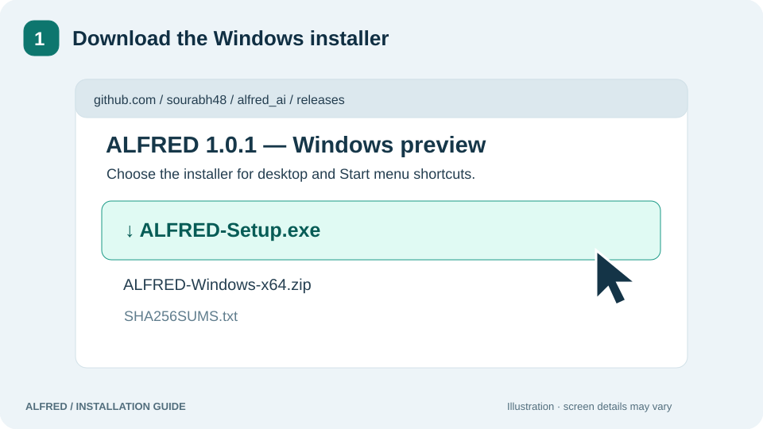

01 · Download
Choose your Windows package
Download ALFRED-Setup.exe for normal installation. You do not need a separate Python, pip, Docker, PostgreSQL or Redis installation.
Prefer portable? Download the ZIP and extract the entire folder before running it.